Scope
Nail the problem before the tech — a clear scope beats a clever stack every time.
ESTABLISHING UPLINK
// TRANSMISSION INCOMING — HI, I'M
▍
// 002
A computer engineering student surviving on caffeine and building things that live on the internet.
I am a final-year Computer Engineering student at GIKI who thrives at the intersection of technical precision and digital execution. Specializing in full-stack web and mobile application development, I bridge the gap between hardware and software to build production-ready digital systems; usually fueled by a perfectly timed cup of coffee. When I'm not debugging or designing backend architectures, I channel my problem-solving energy into visual storytelling as a filmmaker, video editor, and the Vice President of the GIKI Media Club.
Currently, I am focused on deploying machine learning models into production environments, refining my full-stack workflow, and tackling my final year engineering milestones. I am actively looking for opportunities to collaborate on innovative software engineering, AI, or creative tech projects where I can build impactful solutions from the ground up.
DEPLOYING ML MODELS TO PRODUCTION
REFINING FULL-STACK WORKFLOW
FINAL-YEAR ENGINEERING MILESTONES
OPEN TO AI / SOFTWARE COLLABS▍
// METHOD
Nail the problem before the tech — a clear scope beats a clever stack every time.
Get an ugly version working end-to-end fast; momentum reveals what actually matters.
Cut what doesn't earn its place — the same instinct that shapes a film in the edit.
Ship it, then keep listening — real feedback is the only spec that counts.
// 003
// 004
A browser-based emulator for a custom 16-bit RISC architecture featuring a pipeline visualizer, cache simulator, hazard detection, and an AI-powered assembly code generator.
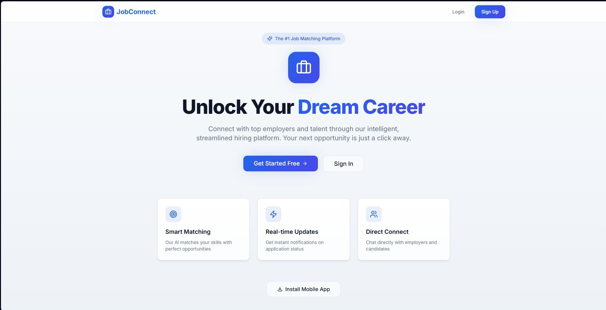
A modern, serverless full-stack recruitment platform built with React and Firebase that streamlines hiring by connecting job seekers and employers through real-time data management and automated communication workflows.
// 005
Hardware, signals & core CS — builds from the workbench and the terminal.
Designed and built a text-based console simulator featuring an integrated multi-tier pet management system, dynamic state tracking, and mini-game economies.
VIEW CODE ↗Developed a console-based online store management system leveraging custom-built data structures, including a Binary Search Tree (BST) for high-efficiency product inventory indexing and a linear Queue for sequential order processing.
VIEW CODE ↗Designed a hardware-based electronic security system using five 4017 decade counters and a multi-input AND gate to validate precise sequential pulse inputs for a code-lock mechanism.
VIEW REPORT ↗Developed an inductive proximity metal detector using a TDA0161 IC and a custom-wound AWG wire search coil to sound a buzzer via transistor amplification upon detecting localized electromagnetic changes.
VIEW REPORT ↗An ESP32-powered kitchen that watches itself — gas, flame and temperature sensors stream to a dashboard with remote alerts and appliance control.
Engineered a MATLAB-based Exoplanet Transit Detection System featuring an interactive GUI, Box Least Squares (BLS) signal filtering algorithms, and interactive 3D orbital modeling to process raw light-curve data.
VIEW CODE ↗Engineered a MATLAB-based radar detection pipeline featuring LFM pulse compression with matched filtering, MTI clutter suppression, 2D range-Doppler FFT analysis, and adaptive CFAR thresholding across simulated X-band scenarios.
VIEW CODE ↗Co-authored a scratch-built Principal Component Analysis (PCA) engine in Python to process and denoise a 167-country socioeconomic dataset, evaluating custom matrix decomposition and four-metric Mean Squared Error (MSE) analysis against scikit-learn benchmarks.
VIEW CODE ↗Engineered a client-server instant messaging application in Python utilizing multi-threaded TCP sockets, custom binary framing, and synchronized queue state processing to handle concurrent broadcast and unicast message routing through a Tkinter GUI.
VIEW CODE ↗// 006
Full-Stack Intern
Bridging client-side aesthetics with robust server-side logic to develop clean, efficient, and user-centric digital solutions.
Machine Learning Intern
Bridging the gap between data science and production environments by building scalable ML pipelines and implementing efficient algorithms.
AI Intern
Bridging the gap between intelligent algorithms and scalable software by integrating cutting-edge AI models into functional, user-centric applications.
VIEW CERTIFICATE ↗Vice President
Joined in my very first days at GIKI purely out of a passion for video editing — the society went on to teach me everything I know about production. Today I serve as its Vice President, leading the same teams and productions that shaped me.
// 007
DreamBig
AUG 2025Participated in an intensive IC design summer school focused on modern semiconductor design workflows and EDA tool implementation.
HOVER TO REVEAL ⟲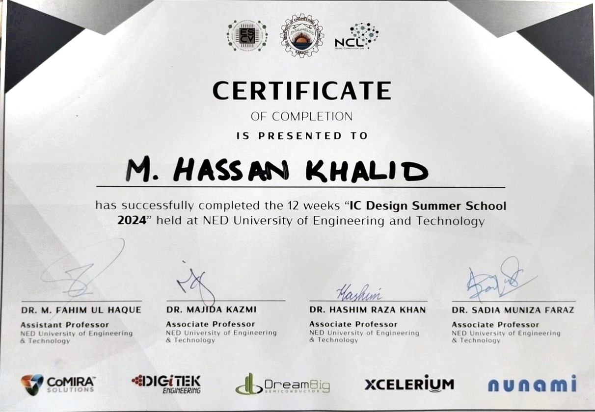
Media Club, GIKI
MAY 2026Spearheading internal operations and cross-functional team coordination to execute high-impact media campaigns and large-scale campus productions.
HOVER TO REVEAL ⟲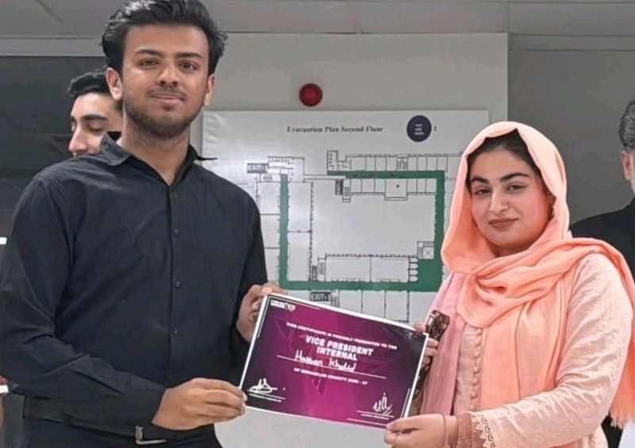
Anthropic
MAY 2026Trained in Anthropic's 4D framework — delegation, description, discernment and diligence — for collaborating with AI effectively, efficiently and responsibly.
HOVER TO REVEAL ⟲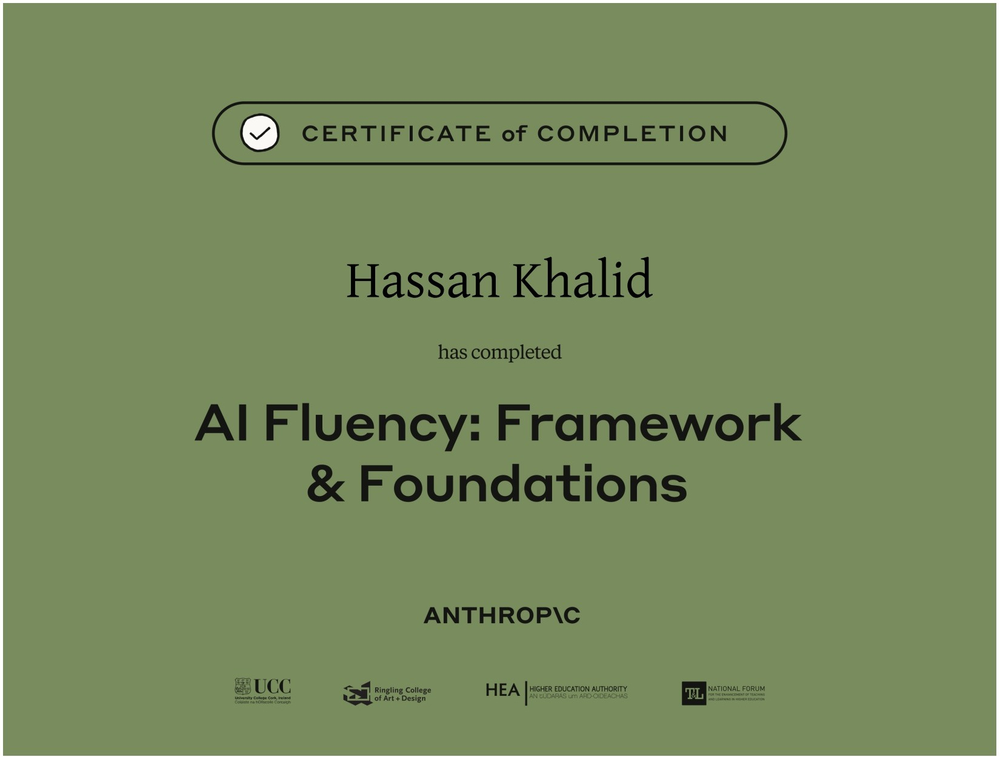
Anthropic
JUN 2026Covered the foundations of working with Claude — model capabilities, prompting techniques and practical workflows for getting reliable results from frontier AI.
HOVER TO REVEAL ⟲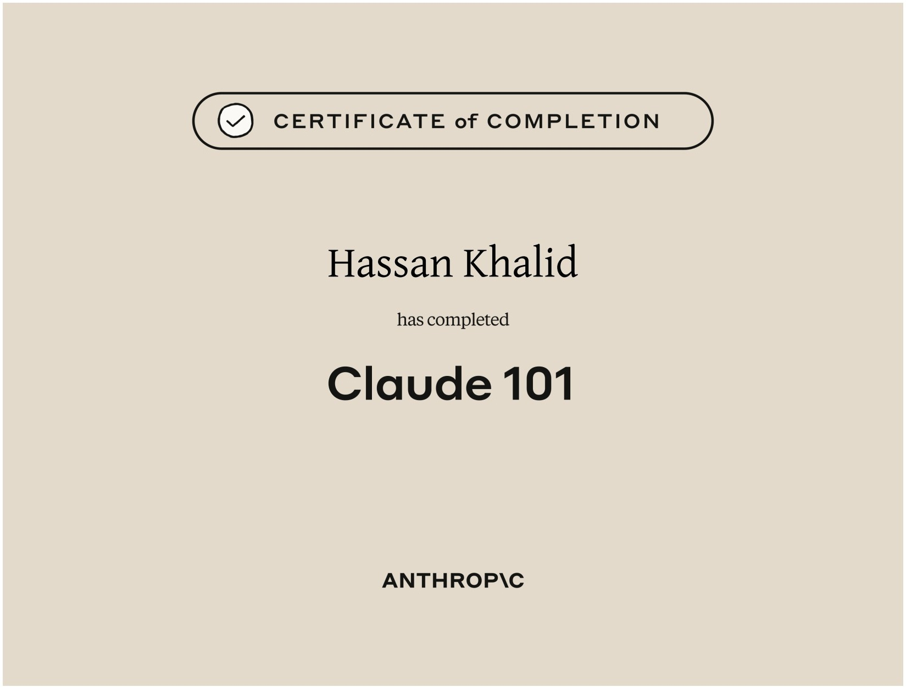
Anthropic
JUL 2026Hands-on agentic development with Claude Code — planning, tool use and driving real codebases from the terminal with an AI coding agent.
HOVER TO REVEAL ⟲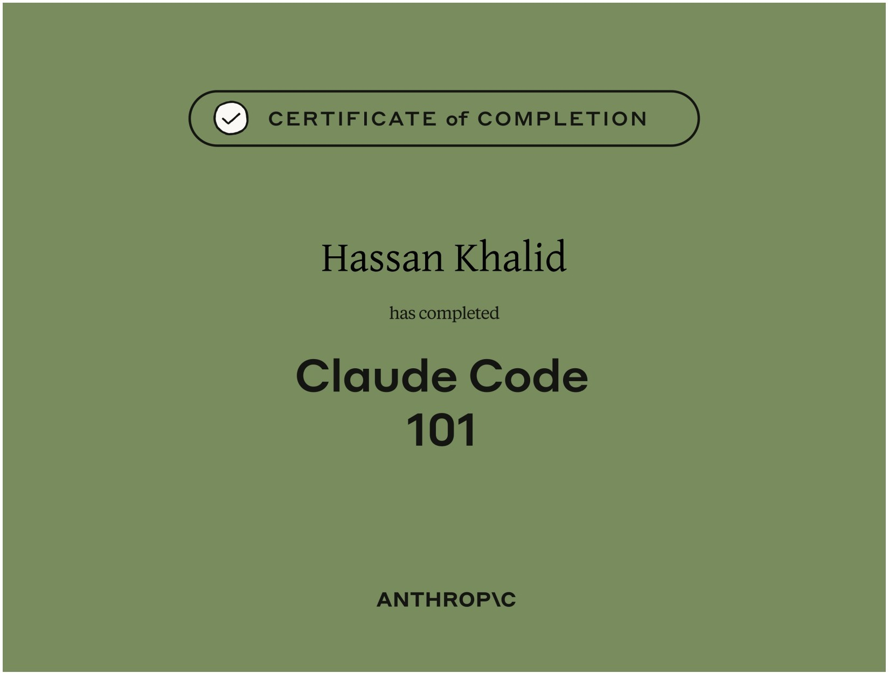
// 008
Ghulam Ishaq Khan Institute of Engineering Sciences & Technology (GIKI), Topi
Pursuing a bachelor's degree in Computer Engineering and is stuck between assignments and deadlines.
Punjab Group of Colleges, Kot Addu
Completed Intermediate with a Pre-Engineering focus, establishing a strong foundation in mathematics and sciences.
The City School, Kot Addu
Completed Matriculation with a Computer focus, establishing a strong fundamental groundwork in mathematics, physics, and analytical thinking.
Sultan Muhammad Shah Agha Khan School, Karachi
To be honest, I barely remember that school. I was just a kid back then; living completely in the moment, entirely untouched by the weight of the future.
// 009
An engineering student making short films? You read that right. Every year at the GIKI Media Club — the society I'm part of — we're tasked with producing a short film. These projects have taken serious time and energy, so they've more than earned their place here.
Haunted by childhood trauma and academic failure, a desperate student is saved from suicide by a mysterious caller who begins controlling his future, only to realize the voice on the line is turning into his worst nightmare.
▶ WATCH ON YOUTUBEInikaas is a haunting psychological drama about a girl battling terrifying hallucinations and profound guilt within a clinical setting. Desperate for a second chance at life, she must confront her fractured memories to untangle reality from her mind's illusions.
▶ WATCH ON YOUTUBE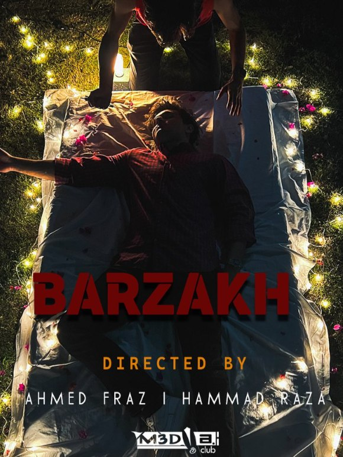
Barzakh follows a university student whose life spirals out of control after a tragic family loss, pulling him into addiction and fatal conflicts with his peers. As betrayal, jealousy, and hidden motives surface, it untangles into a dark tale of murder and revenge.
▶ WATCH ON YOUTUBE// 010
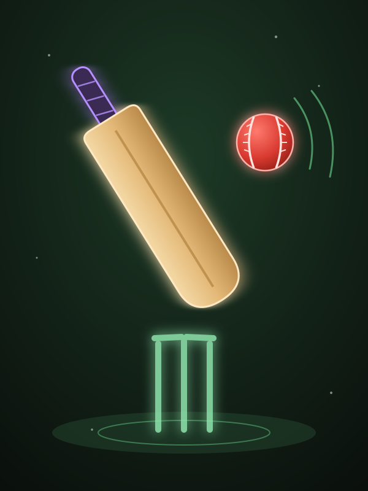
01Watching since I was ten. This game has handed me more heartbreak than any exam ever did — and I still can't stop watching or playing.
The one thing that got me through the COVID lockdown. Boredom still doesn't stand a chance — the controller is never far away.
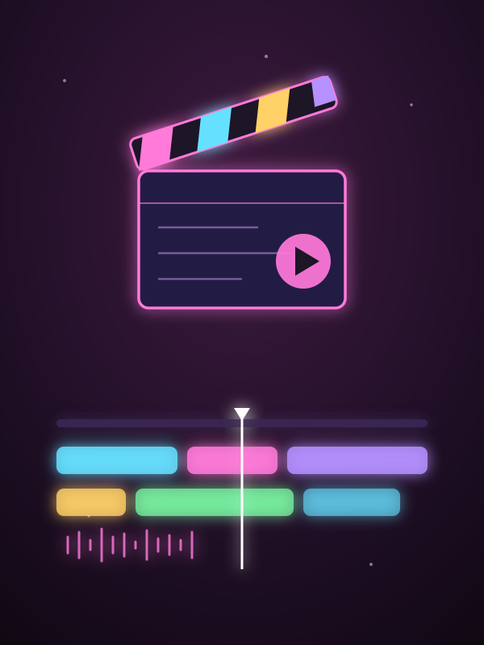
03The first skill I ever taught myself, back at fifteen. What started as curiosity is now simply part of who I am.
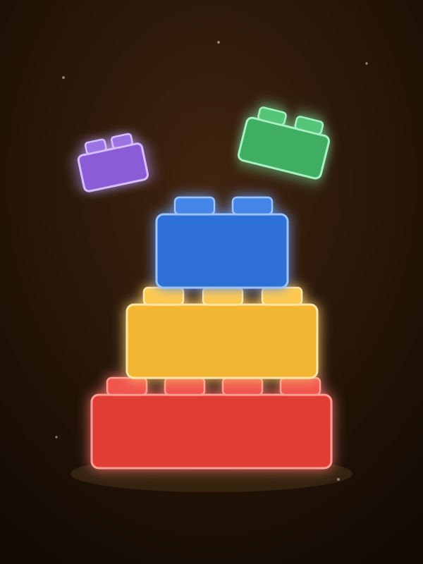
04Six-year-old Hassan is alive and well inside me — I just love collecting these bricks, one set at a time.
Jumped in just to escape the heat — somewhere along the way, the water turned into a love of its own.
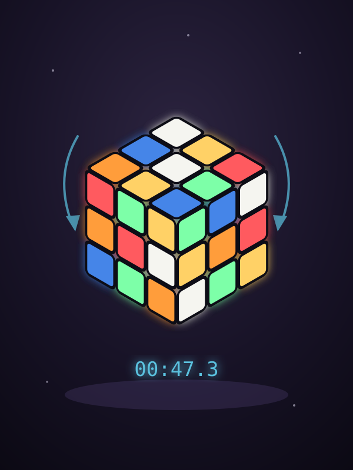
06A friend brought one to school once and I was hooked — now I'm the nerd solving a 3×3 in under a minute.
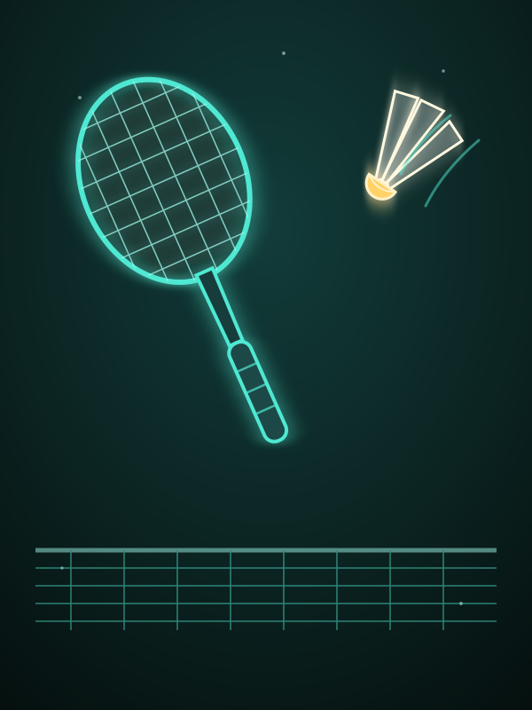
07Played endlessly through school — captained the team, too. These days the real challenge is finding someone to play with.
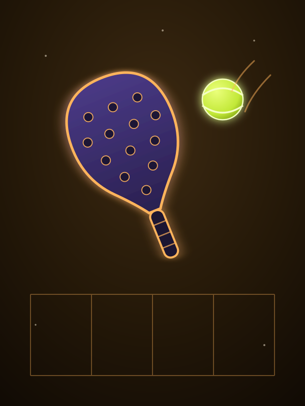
08The new sport everyone suddenly can't stop talking about — so I figured, why not give it a try?
// 011 — FINAL DESTINATION
Currently open to remote jobs, collaborations, and interesting conversations — if you're building something exciting, my inbox is the launchpad.